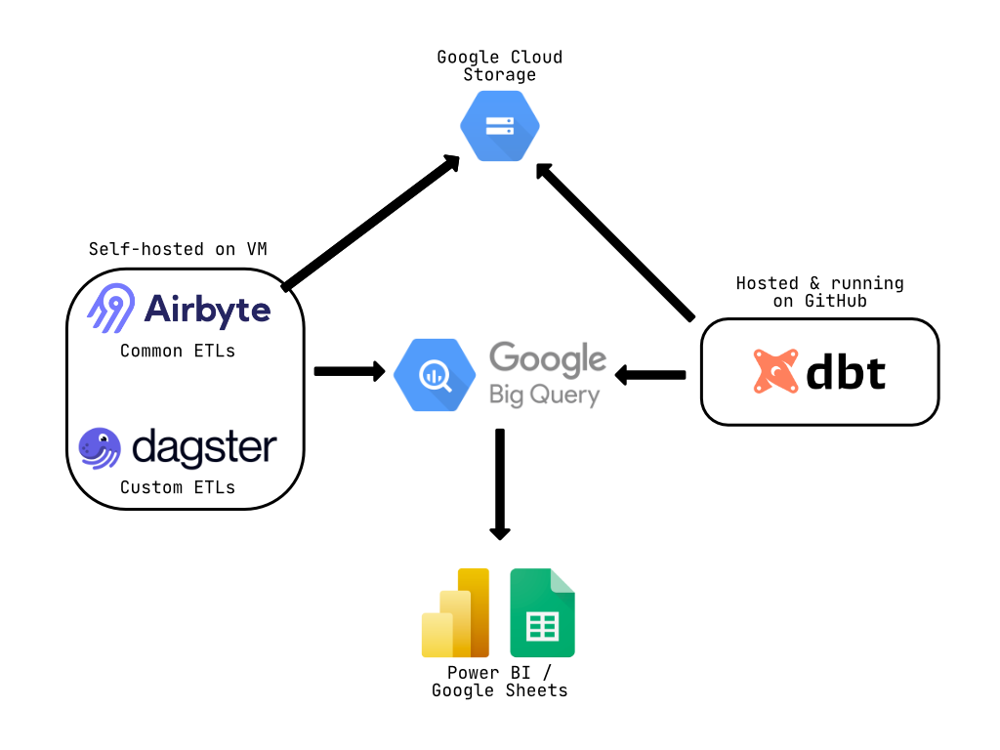

Introduction: When PowerBI Becomes the Bottleneck
When I joined this French HRIS SaaS company as their first data engineer, the data infrastructure was a ticking time bomb. The existing setup was entirely built around PowerBI with direct connections to multiple sources (Salesforce, Google Sheets, internal databases) and all transformations were handled directly within PowerBI itself.
The symptoms were critical:
- Hundreds of intermediate tables created in PowerBI with no documentation
- Query timeouts becoming the norm as data volume grew
- Zero version control or testing capability
- No clear data lineage or governance
- Each dashboard refresh could break dependent reports
This wasn’t a sustainable architecture, it was a house of cards waiting to collapse. The mission was clear: build a modern, scalable data stack from the ground up in under two months, with a strict budget constraint.
A note on the €100/month figure: Yes, the title sounds clickbait-worthy and it is. But it’s also the reality of what we achieved at the time I left the company. This cost reflects low initial data volumes and aggressive optimization choices (self-hosted tools, scheduled VM shutdowns, extract mode on PowerBI). With GCP’s pay-as-you-go model, costs will naturally scale with usage (especially if queries aren’t optimized or data volumes grow significantly). The real lesson isn’t “you can always run a data stack for €100/month,” but rather “strategic architectural choices can deliver 99% of enterprise features at 1% of typical costs during the early stages.”
The Cloud Platform Battle: Why GCP Over Azure?
The company was deeply integrated into the Microsoft ecosystem for office tools making Azure seem like the “obvious” choice. However, as a data engineer planning to center the stack around dbt, I knew this decision deserved deeper analysis.
The Azure friction points:
- The
dbt-synapseadapter at the time required constant workarounds for basic operations - Synapse Analytics demanded manual tuning (distribution keys, columnstore indexes) that felt like legacy DBA work
- The compute/storage coupling meant we couldn’t scale independently
- For a team with junior analysts learning SQL, the T-SQL specificities added unnecessary complexity
The PoC on GCP
Rather than arguing in theory, I proposed a one-week proof of concept using GCP’s generous free trial. The arguments that convinced management:
- Zero financial risk: Free trial covered the entire PoC
- Speed: Functional pipeline with real data in 5 days vs. estimated 3-4 weeks on Azure
- Cost projection: €100-200/month for production vs. €2,000+/month on competing solutions
- Skill alignment: The stack was optimized for data engineering + BI collaboration
Infrastructure as Code First: The Terraform Foundation
One of the most critical decisions was to start with Infrastructure as Code from day one, not as an afterthought. Using Terraform before writing any data pipeline code provided immediate benefits:
Architecture Principles
Module Structure:
terraform/
├── modules/
│ ├── bigquery_dataset/
│ ├── bigquery_access/
│ ├── bigquery_sandbox/ # Dev environments
│ ├── compute_engine/
│ ├── gcs_buckets/
│ ├── gcs_buckets_iam/
│ └── service_accounts/
├── environments/
│ ├── dev/
│ │ ├── main.tf
│ │ └── terraform.tfvars
│ └── prod/
│ ├── main.tf
│ └── terraform.tfvars
└── backend.tf # Remote state on GCSKey decisions:
- Workspaces per environment (dev/prod) for complete isolation
- YAML + tfvars for configuration to avoid hardcoding sensitive data
- Remote backend on GCS from the start for state management and collaboration
- Separate sandbox datasets for each analyst to experiment safely
Why this mattered:
- Reproducible infrastructure in minutes (critical for disaster recovery)
- Clear audit trail of all infrastructure changes
- Onboarding new environments became trivial
- No manual clicking in the GCP console = no configuration drift
Data Ingestion: The Self-Hosted Airbyte Strategy
For data ingestion, I chose Airbyte in a self-hosted configuration rather than the managed cloud version. This decision was driven by economics and control.
The Cost Equation
- Budget allocated: €10,000/month
- Actual spend: €100/month (including BigQuery usage)
Self-hosted setup:
- VM: n1-standard-2 (~€50/month, running 24/7)
- BigQuery: ~€50/month (low usage initially, with PowerBI extracts reducing query volume)
- Total: 1% of allocated budget
The trade-offs:
- ✅ 100x cost reduction
- ✅ Full control over upgrades and configuration
- ✅ Data never leaves our GCP project
- ❌ Manual maintenance responsibility
- ❌ Need for backup strategy
Operational Best Practices
Backup Strategy:
- Daily automated backups of the Airbyte Postgres database via bash script
- Stored in GCS with 30-day retention
- Enabled safe upgrades without fear of losing connector configurations
Monitoring:
- Native Airbyte alerting configured for failed syncs
- GCP monitoring on VM health metrics
- Weekly review of connector performance
When to consider managed: When your data ingestion costs exceed €500-1,000/month in compute or when the team lacks bandwidth for maintenance, the managed version becomes cost-effective.
Custom Orchestration: Dagster for the Gaps
While Airbyte covered 80% of our data sources, certain systems required custom extraction logic:
- MSBC (accounting system with complex API)
- Salesloft (sales engagement platform)
- Anaplan (financial planning)
- Trustpilot (reviews)
- 360Learning (LMS platform)
Why Dagster Over Airflow?
Having prior experience with Dagster, I chose it for several reasons:
- Native Python experience: More intuitive for data engineers vs. Airflow’s DAG syntax
- Built-in data quality: Dagster’s asset-oriented approach aligned with our dbt models
- Modern development experience: Better local development and testing
- Comptability with Airbyte & dbt
Cost Optimization Pattern
The Dagster VM employed a scheduled shutdown strategy:
- VM powered on via Cloud Scheduler at specific times (e.g., 6 AM daily)
- Jobs executed via Dagster’s sensor/schedule system
- Automatic shutdown after job completion
- Result: ~8 hours/day runtime vs. 24/7 = 66% cost reduction
Transformation Layer: dbt Core + CI/CD
The transformation layer was built entirely on dbt Core (not dbt Cloud) with a custom CI/CD pipeline on GitHub Actions.
Why dbt for Junior Analysts?
The team consisted primarily of junior analysts more comfortable with SQL than Python. dbt provided:
- SQL-first approach: No need to learn pandas or Spark
- Gradual learning curve: Start with simple SELECT statements, progress to Jinja macros
- Built-in testing: Data quality checks as code
- Clear documentation: Auto-generated docs from YAML configs
The Deployment Pipeline
Branch Strategy:
devbranch: Continuous deployment to dev environmentmainbranch: Production deployment only via releases
Workflow:
- Developer creates feature branch
- Opens PR → GitHub Actions runs:
dbt compile(syntax check)dbt run --select state:modified+ --defer(only changed models)dbt test(data quality tests)
- On merge to
dev→ Full deployment to dev BigQuery - To release to production:
- Create GitHub Release
- Automated deployment to prod BigQuery
- dbt manifest uploaded to GCS for lineage tracking
The --defer Strategy:
The --defer flag was crucial for CI/CD efficiency:
dbt run --select state:modified+ --defer --state ./prod-manifest/This meant:
- Only rebuild models that changed (and their downstream dependencies)
- Reference production data for unchanged upstream models
- CI/CD runs completing in minutes instead of hours
- Reduced BigQuery costs during development
Testing Strategy
Implemented tests progressively:
- Phase 1:
Uniqueandnot_nulltests on primary keys - Phase 2: Relationships tests between models
- Phase 3: Custom Great Expectations tests for business logic
Living Documentation: dbt Docs on Cloud Run
Rather than using dbt Cloud for hosting documentation, I built a self-hosted solution:
Architecture:
- dbt generates static docs (
dbt docs generate) - CI/CD uploads docs to GCS bucket
- Cloud Run serves the static site
- Identity-Aware Proxy (IAP) handles authentication
Benefits:
- Access control via IAP tied to company Google Workspace
- Always up-to-date (regenerated on every deployment)
- Full control over styling and customization
Trade-off: No IDE or scheduler from dbt Cloud but we didn’t need them given our GitHub Actions + BigQuery setup.
Change Management: Training the Team
Building the stack was only half the battle. Enabling the team to use it effectively was equally critical.
Training Approach
Format:
- Documentation: Comprehensive Confluence space with architectural diagrams
- Peer programming sessions: Pairing junior analysts with me on real dbt models
- Code review culture: Every PR reviewed for both correctness and style
Key Topics Covered:
- dbt modeling patterns (staging → intermediate → marts)
- When to use Jinja macros vs. plain SQL
- Testing strategies and data quality expectations
- Git workflow and PR best practices
- How to debug failed dbt runs
Challenges Faced:
- Resistance from PowerBI power users who felt their expertise was being devalued
- Learning curve for Git/GitHub (many analysts had never used version control)
- Balancing speed vs. quality in early deliverables
What Worked:
- Starting with “quick wins” (migrating simple dashboards first)
- Celebrating successful PRs from junior team members
- Creating a “dbt champions” program where early adopters helped train others
Lessons Learned & Best Practices
What I’d Do Again
- Infrastructure as Code from Day 1
- Saved countless hours in environment setup
- Made disaster recovery trivial
- Enabled true GitOps workflow
- Economic Pragmatism
- Self-hosted tools (Airbyte, Dagster) reduced costs by 99%
- Allowed us to prove value before scaling investment
- €100/month stack vs. €10k budget created enormous credibility
- The PoC Strategy
- One week to prove technical feasibility beat months of theoretical debates
- Made the decision objective, not political
- Prioritizing Developer Experience
- Choosing tools (dbt, BigQuery) that matched team skill levels
- Investing in CI/CD early prevented technical debt
- Focus on documentation paid dividends during onboarding
- Modular Architecture
- Terraform modules made infrastructure changes safe
- dbt’s modular models allowed parallel development
- Clear separation of concerns (ingestion → transformation → serving)
What I’d Do Differently
- Start with Data Quality Monitoring Earlier
- Would implement Great Expectations or dbt tests from week 1
- Catching data issues in dev vs. production saves significant time
- More Aggressive Cost Monitoring
- While costs were low, setting up budgets and alerts proactively would prevent surprises at scale
- Formalize the Backup Strategy Sooner
- The daily Postgres backup script was added reactively
- Should have been part of the initial Terraform deployment
- Data Catalog from the Start
- dbt docs are great but a proper data catalog (DataHub, Atlan) would have helped with discovery
- The longer you wait, the harder the migration
Deployment Timeline Reality
From zero to fully operational stack: 6 weeks (depends on the amount of ingestion, complexity regarding PII, GDPR etc…)
This was only possible because of:
- Single decision-maker (me) on technical choices
- Management trust in the approach
- Focus on “good enough” over perfection initially
Architecture Overview
Here’s a visual representation of the final data stack architecture:

Architecture Highlights:
- Ingestion Layer: Self-hosted Airbyte for common ETLs + Dagster for custom sources
- Storage: Google Cloud Storage for raw data, BigQuery as the central data warehouse
- Transformation: dbt Core running on GitHub Actions CI/CD
- Consumption: PowerBI and Google Sheets with extract mode from BigQuery
- Cost: €100/month total (Airbyte VM ~€50 + BigQuery ~€50)
Conclusion: Architecture for Growth
Building a modern data stack isn’t about using the trendiest tools, it’s about choosing the right ecosystem for your team’s skills, your business needs and your constraints.
The final architecture:
- Cost: €100/month (1% of budget)
- Maintenance: ~4 hours/week after initial setup
- Team productivity: 10x improvement in pipeline development speed
- Data quality: Zero production incidents after month 2
- Scalability: Architecture ready for 100x data volume growth
Key Takeaways:
- Don’t default to the “corporate standard” cloud without proper analysis
- Self-hosted tools can provide 90% of managed features at 1% of the cost (the hidden tax is the time spent to deploy and maintain self-hosted tools)
- Infrastructure as Code is non-negotiable for modern data engineering
- Choose tools that match your team’s skill level (dbt for SQL-first teams)
- A one-week PoC beats months of theoretical planning
The modern data stack doesn’t have to be expensive or complex. With the right architectural choices and a focus on fundamentals, a single data engineer can build production-grade infrastructure in weeks, not months.